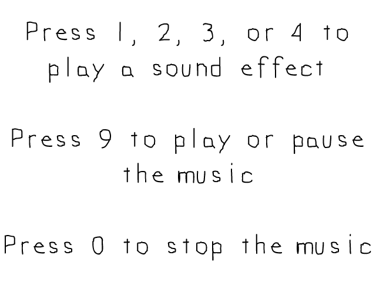

Sound Effects and Music

Last Updated: Nov 10th, 2025
SDL's base audio is complex to say the least. The SDL_mixer extension library makes it much easier to play music and sound effects.At time of writing, SDL3_mixer is not out yet and in order to get this to run you need to be able to build it from source because SDL2_mixer will not work with SDL3. At time of writing, you will also need to build the latest version of SDL3 because SDL3_mixer is dependent on changes to SDL3.
This tutorial uses SDL3_mixer SHA 4182794ea45fe28568728670c6f1583855d0e85c and SDL3 SHA cecf4b0d4e771fea01ecbd0594a948ee0f872fb5. You'll want to make sure you use those commit SHAs or newer until SDL3_mixer is officially released.
//Using SDL, SDL_image, SDL_mixer, and STL string #include <SDL3/SDL.h> #include <SDL3/SDL_main.h> #include <SDL3_image/SDL_image.h> #include <SDL3_mixer/SDL_mixer.h> #include <string>
We're going to be using the SDL_mixer extension library so make sure it's set up in your project.
//The window we'll be rendering to
SDL_Window* gWindow{ nullptr };
//The renderer used to draw to the window
SDL_Renderer* gRenderer{ nullptr };
//Instruction texture
LTexture gPromptTexture;
//The mixer to output to
MIX_Mixer* gMixer{ nullptr };
//The track containing music that will be played
MIX_Track* gMusicTrack{ nullptr };
//The sound effects that will be used
MIX_Audio* gScratchAudio{ nullptr };
MIX_Audio* gHighAudio{ nullptr };
MIX_Audio* gMediumAudio{ nullptr };
MIX_Audio* gLowAudio{ nullptr };
//The track the sound effects will be played on
MIX_Track* gEffectTrack{ nullptr };
In our global variables we declare a MIX_Mixer audio mixer. If you're going to be
playing multiple audio effects while playing music, you need something to mix the audio so it can be played on an audio device like your headset.
Then we declare a MIX_Track for our music. Those of you familiar with SDL2_mixer, the
Lastly, for our group of sound effects, we declare a MIX_Audio for each of our sound effects and a track to play them on.
If it's a bit confusing right now, just understand that
Then we declare a MIX_Track for our music. Those of you familiar with SDL2_mixer, the
MIX_Track are a replacement for channels.Lastly, for our group of sound effects, we declare a MIX_Audio for each of our sound effects and a track to play them on.
If it's a bit confusing right now, just understand that
MIX_Audio gets played on a MIX_Track which is mixed by a
MIX_Mixer so you can hear it on audio device.
bool init()
{
//Initialization flag
bool success{ true };
//Initialize SDL with audio
if( SDL_Init( SDL_INIT_VIDEO | SDL_INIT_AUDIO ) == false )
{
SDL_Log( "SDL could not initialize! SDL error: %s\n", SDL_GetError() );
success = false;
}
When using SDL_mixer or SDL audio in general, make sure to pass SDL_INIT_AUDIO to
SDL_Init.
{
//Create window with renderer
if( SDL_CreateWindowAndRenderer( "SDL3 Tutorial: Sound Effects and Music", kScreenWidth, kScreenHeight, 0, &gWindow, &gRenderer ) == false )
{
SDL_Log( "Window could not be created! SDL error: %s\n", SDL_GetError() );
success = false;
}
else
{
//Initialize SDL_mixer
if( MIX_Init() == false )
{
SDL_Log( "SDL_mixer could not initialize! SDL_mixer Error: %s\n", SDL_GetError() );
success = false;
}
else
{
//Create mixer
if( gMixer = MIX_CreateMixerDevice( SDL_AUDIO_DEVICE_DEFAULT_PLAYBACK, nullptr ); gMixer == nullptr )
{
SDL_Log( "SDL_mixer could not create mixer! SDL_mixer Error: %s\n", SDL_GetError() );
success = false;
}
}
}
}
Much like how we had to initialize SDL_ttf, we need to initialize SDL_mixer.
First we initialize SDL_mixer with MIX_Init. Then we create a mixer using MIX_CreateMixerDevice.
First we initialize SDL_mixer with MIX_Init. Then we create a mixer using MIX_CreateMixerDevice.
bool loadMedia()
{
//File loading flag
bool success{ true };
//Load scene image
if( gPromptTexture.loadFromFile( "15-sound-effects-and-music/prompt.png" ) == false )
{
SDL_Log( "Unable to load prompt image!\n" );
success = false;
}
//Load sound effects
if( gScratchAudio = MIX_LoadAudio( gMixer, "15-sound-effects-and-music/scratch.wav", true ); gScratchAudio == nullptr )
{
SDL_Log( "Unable to load scratch sound! SDL_mixer error: %s\n", SDL_GetError() );
success = false;
}
if( gHighAudio = MIX_LoadAudio( gMixer, "15-sound-effects-and-music/high.wav", true ); gHighAudio == nullptr )
{
SDL_Log( "Unable to load high sound! SDL_mixer error: %s\n", SDL_GetError() );
success = false;
}
if( gMediumAudio = MIX_LoadAudio( gMixer, "15-sound-effects-and-music/medium.wav", true ); gMediumAudio == nullptr )
{
SDL_Log( "Unable to load medium sound! SDL_mixer error: %s\n", SDL_GetError() );
success = false;
}
if( gLowAudio = MIX_LoadAudio( gMixer, "15-sound-effects-and-music/low.wav", true ); gLowAudio == nullptr )
{
SDL_Log( "Unable to load low sound! SDL_mixer error: %s\n", SDL_GetError() );
success = false;
}
//Create track for sound effects
if( gHighAudio != nullptr && gMediumAudio != nullptr && gLowAudio != nullptr )
{
if( gEffectTrack = MIX_CreateTrack( gMixer ); gEffectTrack == nullptr )
{
SDL_Log( "Failed to create sound effect track! SDL_mixer Error: %s\n", SDL_GetError() );
success = false;
}
}
In our file loading function we load our send effects with MIX_LoadAudio. After all
our effects are loaded, we create a track for them to play on using
MIX_CreateTrack.
//Load music audio
if( MIX_Audio* musicAudio = MIX_LoadAudio( gMixer, "15-sound-effects-and-music/beat.wav", false ); musicAudio == nullptr )
{
SDL_Log( "Unable to load music! SDL_mixer error: %s\n", SDL_GetError() );
success = false;
}
else
{
//Create track for music
if( gMusicTrack = MIX_CreateTrack( gMixer ); gMusicTrack == nullptr )
{
SDL_Log( "Failed to create music track! SDL_mixer Error: %s\n", SDL_GetError() );
success = false;
}
else
{
//Set audio for track
MIX_SetTrackAudio( gMusicTrack, musicAudio );
}
//The track will hold a reference count
MIX_DestroyAudio( musicAudio );
}
return success;
}
For our music, we load the audio just like the sound effects, we create a track for it just like the sound effects, but this time we call
MIX_SetTrackAudio to bind the music audio to the music track.
SDL_mixer uses reference counting so it will destroy the
SDL_mixer uses reference counting so it will destroy the
MIX_Audio for the music when the music is no longer assigned to the
MIX_Track. This means we can call MIX_DestroyAudio after loading the
MIX_Audio for the music.
void close()
{
//Free music track
MIX_DestroyTrack( gMusicTrack );
gMusicTrack = nullptr;
//Sound effect track
MIX_DestroyTrack( gEffectTrack );
gEffectTrack = nullptr;
//Free sound effects
MIX_DestroyAudio( gScratchAudio );
gScratchAudio = nullptr;
MIX_DestroyAudio( gHighAudio );
gHighAudio = nullptr;
MIX_DestroyAudio( gMediumAudio );
gMediumAudio = nullptr;
MIX_DestroyAudio( gLowAudio );
gLowAudio = nullptr;
//Free the mixer
MIX_DestroyMixer( gMixer );
gMixer = nullptr;
//Clean up textures
gPromptTexture.destroy();
//Destroy window
SDL_DestroyRenderer( gRenderer );
gRenderer = nullptr;
SDL_DestroyWindow( gWindow );
gWindow = nullptr;
//Quit SDL subsystems
MIX_Quit();
SDL_Quit();
}
In our clean up function, we need to make sure to free tracks with
MIX_DestroyTrack,
free audio with MIX_DestroyAudio, free the mixer with
MIX_DestroyMixer, and quit SDL_mixer with
MIX_Quit.`
switch( e.key.key )
{
//Play high sound effect
case SDLK_1:
MIX_SetTrackAudio( gEffectTrack, gHighAudio );
MIX_PlayTrack( gEffectTrack, 0 );
break;
//Play medium sound effect
case SDLK_2:
MIX_SetTrackAudio( gEffectTrack, gMediumAudio );
MIX_PlayTrack( gEffectTrack, 0 );
break;
//Play low sound effect
case SDLK_3:
MIX_SetTrackAudio( gEffectTrack, gLowAudio );
MIX_PlayTrack( gEffectTrack, 0 );
break;
//Play scratch sound effect with track
case SDLK_4:
MIX_SetTrackAudio( gEffectTrack, gScratchAudio );
MIX_PlayTrack( gEffectTrack, 0 );
break;
When we press one of the sound effect buttons, we bind the sound effect to the sound effect track using
The way this demo is set up, all the sound effects share a single track. You don't need to design things that way. What it practically means is that if you were to play the scratch sound effect and then immediately play another sound effect, it will halt the scratch sound effect so the other sound effect can use the track. If you were to play the scratch sound effect and then quickly play it again, it would stop the first play of the scratch sound effect and start a new one because a track can only play one audio at a time.
You could have one track per effect. You can even not allocate tracks yourself and let SDL_mixer handle it with MIX_PlayAudio. If you were to play the audio with
Ultimately, it comes down to how you want to design your audio playing. Odds are you don't want a character to be playing multiple voice lines simulatenously, but you're probably more OK with a character setting off multiple sound effects.
MIX_SetTrackAudio and play
the track using MIX_PlayTrack.The way this demo is set up, all the sound effects share a single track. You don't need to design things that way. What it practically means is that if you were to play the scratch sound effect and then immediately play another sound effect, it will halt the scratch sound effect so the other sound effect can use the track. If you were to play the scratch sound effect and then quickly play it again, it would stop the first play of the scratch sound effect and start a new one because a track can only play one audio at a time.
You could have one track per effect. You can even not allocate tracks yourself and let SDL_mixer handle it with MIX_PlayAudio. If you were to play the audio with
MIX_PlayAudio, it
would play a track per audio play. If you were to call MIX_PlayAudio multiple times, it would have the audio clip being played multiple
times simulatenously.Ultimately, it comes down to how you want to design your audio playing. Odds are you don't want a character to be playing multiple voice lines simulatenously, but you're probably more OK with a character setting off multiple sound effects.
case SDLK_9:
//If there is no music playing
if( MIX_TrackPlaying( gMusicTrack ) == false && MIX_TrackPaused( gMusicTrack ) == false )
{
//Play the music
SDL_PropertiesID props = SDL_CreateProperties();
SDL_SetNumberProperty( props, MIX_PROP_PLAY_LOOPS_NUMBER, -1 );
MIX_PlayTrack( gMusicTrack, props );
SDL_DestroyProperties( props );
}
//If music is being played
else
{
//If the music is paused
if( MIX_TrackPaused( gMusicTrack ) == true )
{
//Resume the music
MIX_ResumeTrack( gMusicTrack );
}
//If the music is playing
else
{
//Pause the music
MIX_PauseTrack( gMusicTrack );
}
}
break;
//Stop the music
case SDLK_0:
MIX_StopTrack( gMusicTrack, 0 );
break;
}
When pressing the play button, we want to make sure the music isn't playing or paused using
MIX_TrackPlaying and
MIX_TrackPaused respectively. If it isn't playing/plaused, we play the track
while passing in the properties stating we want to loop using
If the music is playing/paused, we check if it's paused. If it paused, we resume it. Otherwise, we pause it. Lastly, when we want to stop the music, we just call MIX_StopTrack.
MIX_PROP_PLAY_LOOPS_NUMBER.If the music is playing/paused, we check if it's paused. If it paused, we resume it. Otherwise, we pause it. Lastly, when we want to stop the music, we just call MIX_StopTrack.